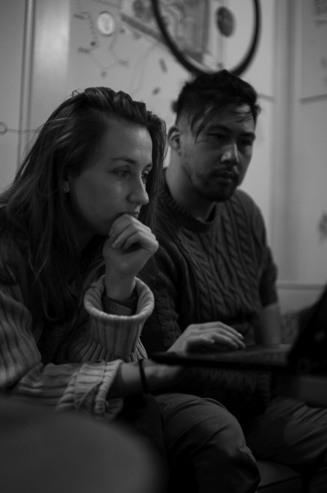
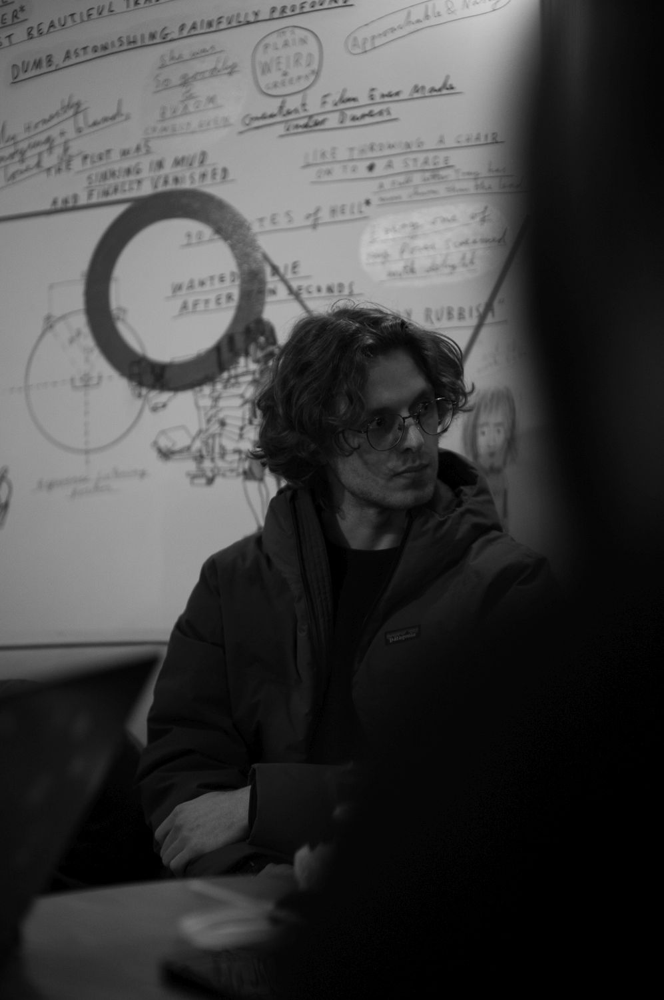
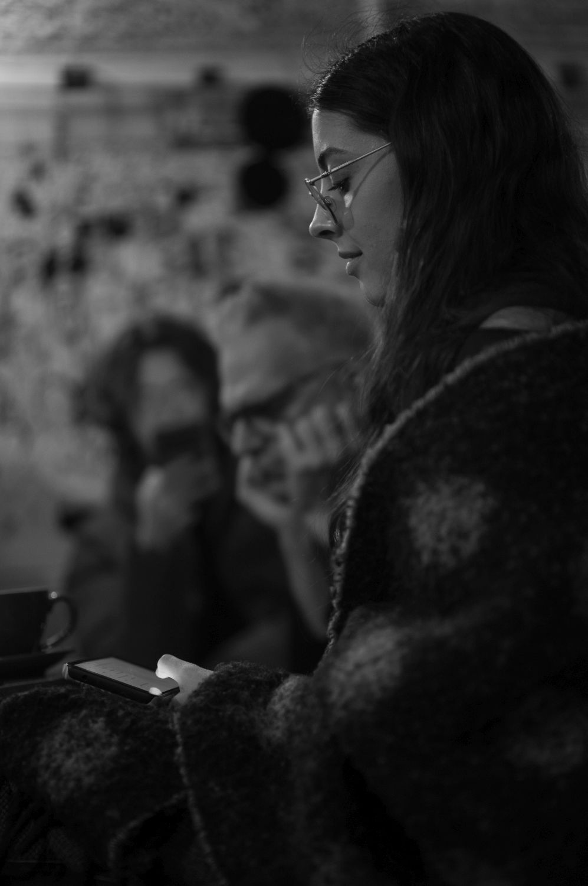
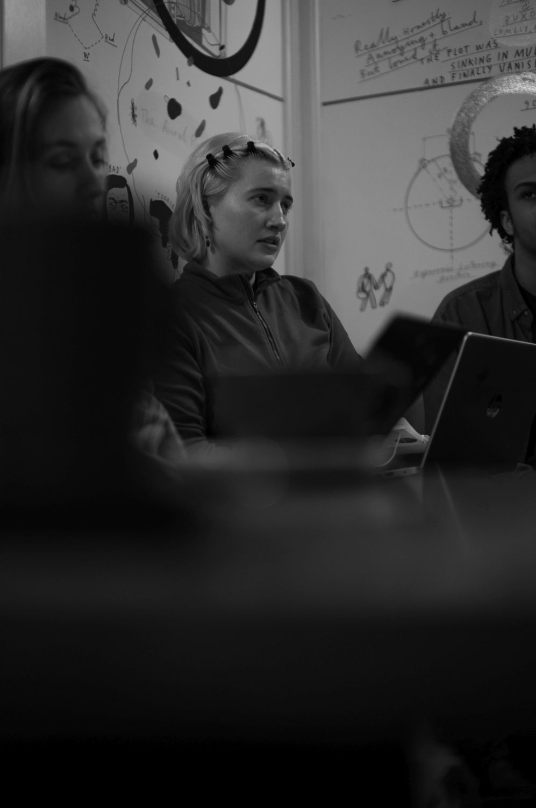
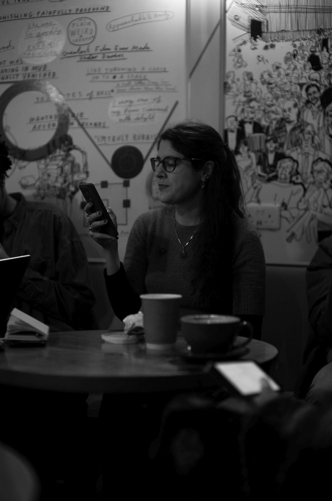
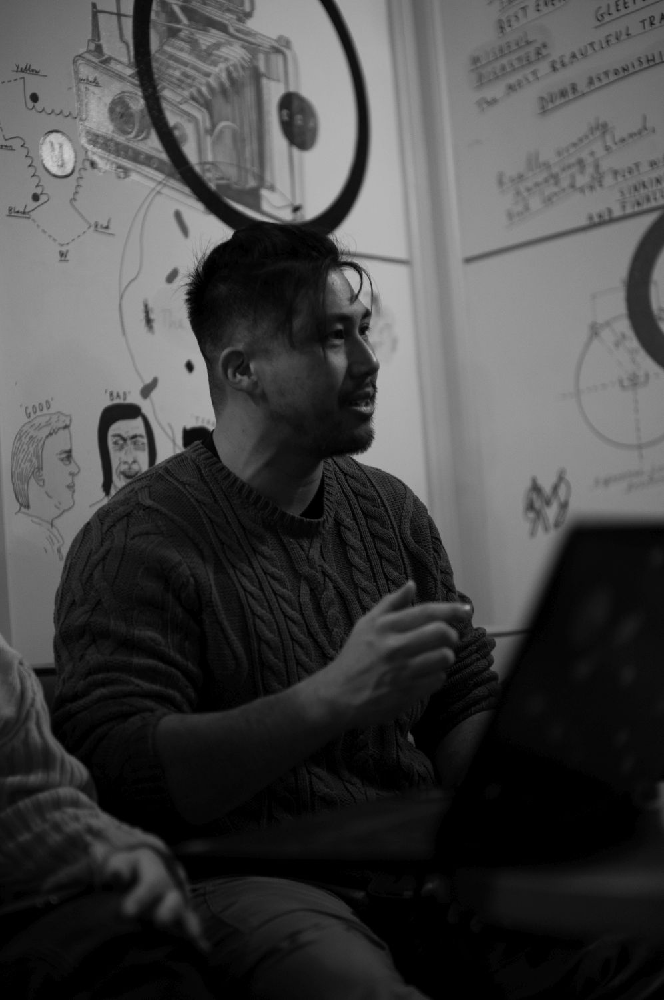

CAMINO MEETS
Associate Director & Dramaturg | Picturehouse Central, 2024-now






Camino Meets is a monthly script-development program for London based playwrights. Writers bring bits of new writing, actors cold-read them, and we offer dramaturgy in a low stakes environment. Several projects have springboarded from here across Off-West End, Fringe and Festival Productions.
Artistic Director & Dramaturg | Chris Fung
Associate Director & Dramaturg | Eilidh Evans
Photographer | Eva Iyobo-Hamilton